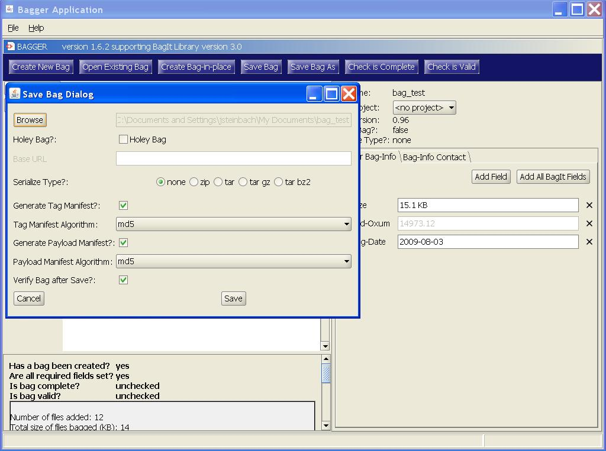
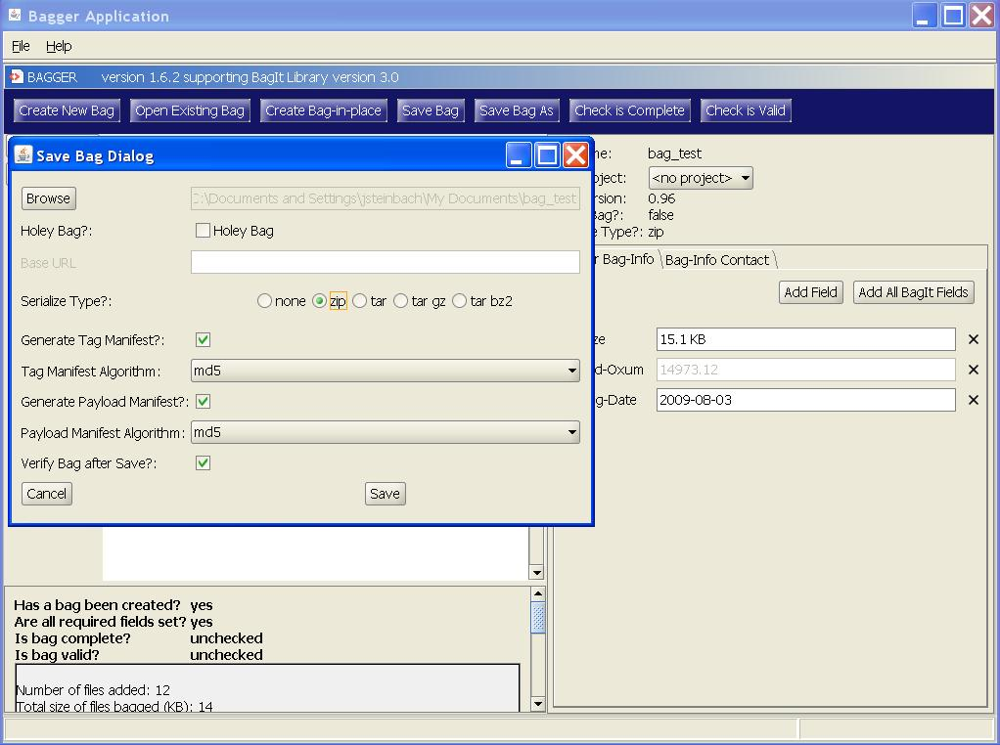
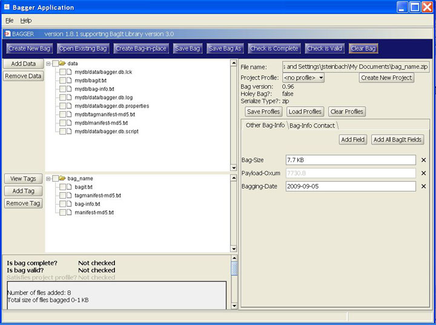
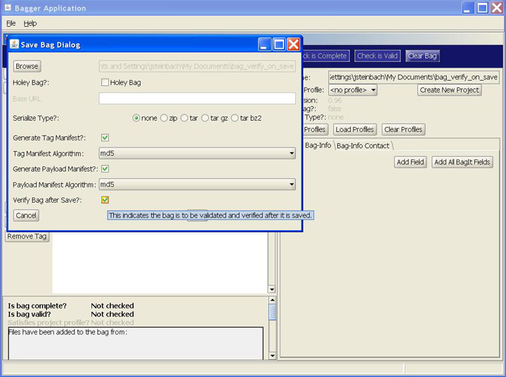
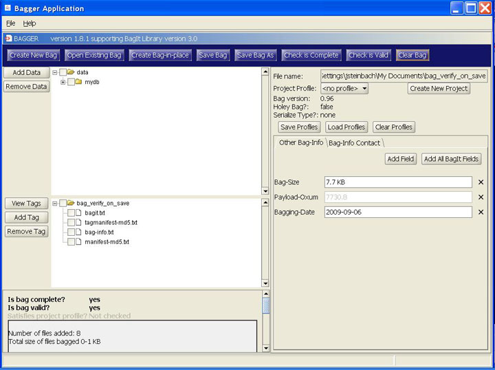
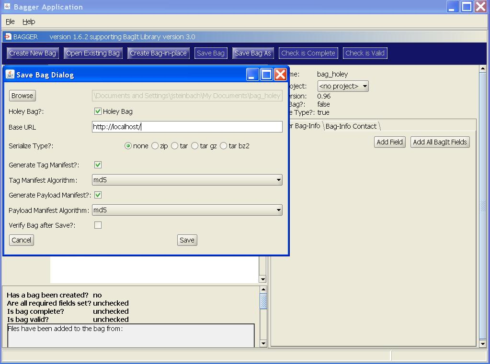

Home: Bagger User Guide: Saving bags
Saving a bag to disk
There are two Bag action buttons for saving bags:
- ‘Save Bag’ : is available if the selected destination already exists. It will overwrite the bag on disk with the current bag of the same name using the existing settings.
- ‘Save Bag As’ : is available to any current bag open in Bagger. It provides the user with several options such as making a bag holey and serializing the bag.
- Basic flow:
- 1. User selects to save bag.
- 2. User provides save options. Save options include:
- * File/directory (User provides file/directory using a File/Directory picker).
- * Format (unserialized, zip, tar, etc.)
- * Whether to generate/regenerate a tag manifest and if so, the algorithm.
- * Whether to generate/regenerate a payload manifest and if so, the algorithm.
- * Whether to verify a bag after writing.
- 3. If the selected destination for the bag already exists, user confirms that files will be overwritten.
- 4. Application completes the bag.
- 5. Application writes the bag and replaces the current bag with the bag returned by saving. (The bag returned by saving references the new bag on disk.)
- 6. Application verifies the bag, if selected by user.
- 7. Application updates the displayed information for the saved bag.
Save Bag
To overwrite an existing bag select the ‘Save Bag’ button.

Selecting Yes from the Create bag confirmation dialog will save the bag to disk at the preexisting location. Once the bag has successfully been saved a Bag saved popup confirmation dialog is shown. Select Ok to continue to the newly saved bag.


Save Bag As
Selecting the ‘Save Bag As’ button will open the Save Bag Dialog which shows the different options that can be applied to saving a bag.

The Save Bag Dialog shows the following options:
- Browse location button:
- Holey Bag?:
- Base URL
- Base URL
- Serialize Type?
- none
- zip
- tar
- tar gz
- tar bz2
- none
- Generate Tag Manifest?
- Tag Manifest Algorithm
- Tag Manifest Algorithm
- Generate Payload Manifest?
- Payload Manifest Algorithm
- Payload Manifest Algorithm
- Verify Bag after Save?
Browse location button
This is the only save input that is required on this dialog. The browse button will open a file selection chooser to set the bag file name and location.


Holey Bag?
See the section ‘Saving as a holey bag’ for information on creating holey bags.
Serialize Type?
In some scenarios, it may be convenient to serialize the bag's base directory (i.e., the filesystem hierarchy representing the bag) into a single-file archive format such as TAR or ZIP (which might involve a compression step). The resulting serialization may later be deserialized (which might involve an uncompression step) to recreate the filesystem hierarchy.
When serializing a bag, care must be taken to ensure that the format's restrictions on file naming, such as allowable characters, length, or character encoding, will support the requirements of the systems on which it will be used. See the ‘BagIt Overview’ section for rules on bag serialization.
The user may decide it is necessary to create a serialized version of the bag’s base directory by changing the ‘Serialized Type?’ option from none to one of the serialization formats provided. If a preexisting location exists, but in a different format then it will not be overwritten. A new bag of the chosen format will be created in the same location. In the example shown, the serialization format is changed to the zip compression format.

Select the Save button to create the serialized zip format of the bag. Once the bag has been successfully saved a Bag saved popup confirmation dialog is shown. Select Ok to continue to the saved zip bag.
Note: The payload file tree displays the file contents in the serialized format in which they are stored in the compressed bag on disk.

To create a serialized bag in one of the other formats follow the same procedure but select the appropriate format under the ‘Serialize Type?’ option.
Generate Tag Manifest?
A tag manifest is a tag file listing tag files and corresponding checksums generated using a particular cryptographic checksum algorithm. A tag manifest file has a name of the form "tagmanifest-algorithm.txt", where algorithm is a string specifying a checksum algorithm. For example, a tag manifest file using SHA1 would have the name tagmanifest-sha1.txt
Bagger provides the following ‘Tag Manifest Algorithms’ to choose from:
md5, sha1, sha256, sha512
Note: A bag may only contain a single tag manifest for a particular checksum algorithm.
Generate Payload Manifest?
A payload manifest is a tag file listing payload files and corresponding checksums generated using a particular cryptographic checksum algorithm. A payload manifest file has a name of the form manifest-algorithm.txt, where algorithm is a string specifying a checksum algorithm, such as manifest-md5.txt or manifest-sha1.txt
Bagger provides the following ‘Payload Manifest Algorithms’ to choose from:
md5, sha1, sha256, sha512
Note: A bag may only contain a single payload manifest for a particular checksum algorithm.
Refer to the ‘BagIt Overview’ section for details about checksum algorithms and how they are used in BIL.
Verify Bag after Save?
Another save option is bag verification upon a successful save.

Upon a successful save the validation test will be performed. If the bag is valid a Validation dialog will be shown indicating a successful check. The ‘Is bag complete?’ and ‘Is bag valid?’ status indicators will both show ‘yes’. If the bag is not valid an error message dialog will be shown indicating the validation problem and the status indicators will show ‘no’.
See the section ‘Checking that a bag is valid’ in the ‘Checking Bag Status’ chapter for information on verifying bags.

Saving as a holey bag
The Bagger Application allows the user to create a holey bag. According to the BagIt specification, a holey bag is a bag that does not itself contain its data payload files. Instead it contains a reference file called fetch.txt that is a list of all the files to be included in the bag and the URL location from which the files can be retrieved at a later time. A holey bag cannot be complete until these files are actually fetched and reincorporated to create a whole bag with all its payload files. The Save Bag Dialog provides a checkbox to indicate that a bag should be made holey. To learn the details about what holey bags are and how they are used, refer to the ‘BagIt Overview’ section.
From the BagIt specification: For reasons of efficiency, a bag may be sent with a list of files to be fetched and added to the payload before it can meaningfully be checked for completeness. An optional top-level file named ‘fetch.txt’, if present, contains such a list. The ‘fetch.txt’ file allows a bag to be transmitted with ‘holes’ in it, which can be practical for several reasons. For example, it obviates the need for the sender to stage a large serialized copy of the content while the bag is transferred to the receiver. Also, this method allows a sender to construct a bag from components that are either a subset of logically related components (e.g., the localized logical object could be much larger than what is intended for export) or assembled from logically distributed sources (e.g., the object components for export are not stored locally under one filesystem tree).
- Basic flow:
- 1. User selects to save as a holey bag.
- 2. User provides save options. Save options include:
- * File/directory (User provides file/directory using a File/Directory picker).
- * Base URL.
- * Format (unserialized, zip, tar, etc.)
- * Whether to generate/regenerate a tag manifest and if so, the algorithm.
- * Whether to generate/regenerate a payload manifest and if so, the algorithm.
- 3. If the selected destination for the bag already exists, user confirms that files will be overwritten.
- 4. Application completes the bag.
- 5. Application makes the bag holey. (Making the bag copy holey will return a new bag that is holey.)
- 6. Application writes the holey bag.
- 7. Application updates the displayed information for the original bag.
Selecting the ‘Save Bag As’ button will open the Save Bag Dialog which shows the different options that can be applied to saving a bag, including selecting the ‘Holey Bag’ checkbox.
Selecting the ‘Holey Bag’ checkbox option enables the ‘Base URL’ field. This is required in order to identify the server address location of the files to be fetched. Enter a URL address into the ‘Base URL’ field and select the ‘Save’ button.


This results in a new holey bag. Notice that the payload directory references the URL address where the files are to be located instead of the data directory.
Note: A holey bag fails the test for ‘Is bag complete?’ The bag will not be complete until the files are fetched and the bag is made whole.